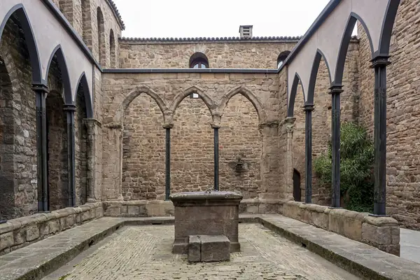

Home › Wine regions › Pla de Bages
Pla de Bages wine region

Photo: Manuel Torres Garcia on Unsplash
Inland hills around Manresa, home of the Picapoll grape.
The world's largest vineyard area, led by Tempranillo and Garnacha.
Climate and soil
Continental-Mediterranean climate at about 400 m, with stone vineyard huts dotting the hills.
Key areas and appellations
Pla de Bages DO
Good to know
The local white Picapoll gives fresh, aromatic wines.
The grapes of Pla de Bages
- Cabernet Sauvignon (red): blackcurrant, cedar, graphite. Best known in Bordeaux, Napa Valley, Coonawarra.
Notable producers in Pla de Bages
- Abadal
Official appellations
| Appellation | Status | Style | Grapes |
|---|---|---|---|
| Pla de Bages Small central Catalan appellation known for Picapoll. | DO | White | Picapoll, Macabeo, Cabernet Sauvignon |
Pla de Bages wines to try
Abadal Picapoll
Pla de Bages · Picapoll
Aromatic local grape with white flowers, pear and fennel on a crisp, fresh palate.
Food: Seafood rice, goat cheese, grilled fish
Food to try with Pla de Bages wines
- Steak: Firm tannins in Cabernet and Tempranillo cut through the fat and char of a seared steak, while peppery Shiraz echoes the sauce.
- Roast leg of lamb: Lamb's rich fat and rosemary call for structured reds; Cabernet's cassis and cedar and Rioja's savoury oak are the classic partners.
- Beef Wellington: Tender fillet and mushroom duxelles suit a structured but polished red; Bordeaux or Burgundy matches the richness without overpowering the pastry.
- Steak and ale pie: Structured, savoury reds stand up to slow-braised beef and the malty depth of an ale gravy under buttery pastry.
- Irish stew: Gentle lamb and potato stew pairs with medium-bodied claret or Rioja, whose soft tannins and savoury notes suit slow-cooked lamb.
- Ploughman's lunch: Mature cheddar, ham and tangy pickle suit a versatile red with fresh acidity or a fruity Chenin that stands up to chutney.
More wine regions in Spain
See Pla de Bages on the wine map
The Wine Reference newsletter
New wines, stories and career guides, one email a week at most.
Over 18s only. Unsubscribe any time with one click. Your email is stored securely by Kit and never shared.
Support The Wine Reference
This guide is free, with no paywall. If it helped you choose a bottle, you can buy me a glass and keep it growing.
🍷 Buy me a glass